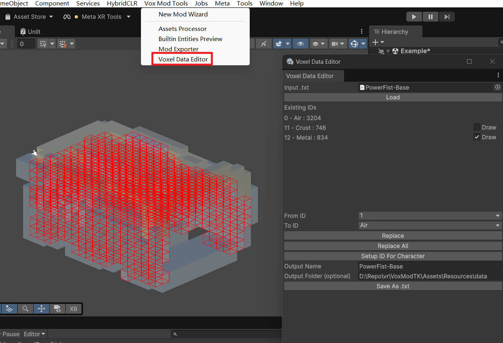

Voxel Data Editor
The Voxel Data Editor is a Unity Editor tool included in the Vox Mod Tools. It allows you to inspect, visualize, and modify the Material IDs of voxel data (.txt files) directly within Unity, without needing to go back to MagicaVoxel.
This is particularly useful for:
- Correcting Material ID mapping mistakes.
- Batch replacing materials (e.g., changing all "Wood" to "Metal").
- Setting up specific material configurations for character models.

Opening the Tool
To open the tool, navigate to the Unity menu: Vox Mod Tools > Voxel Data Editor
Workflow
1. Load Voxel Data
- Assign your voxel data text file (generated after importing/processing
.voxfiles) to the Input .txt field. - Click Load.
2. Inspect and Visualize
Once loaded, the tool displays a list of Existing IDs found in the model.
- List: Shows the Material ID, Material Name, and the count of voxels using that ID.
- Draw Toggle: Check the Draw box next to an ID to visualize those specific voxels in the Scene View with red wireframe gizmos. This helps you identify which part of the model uses which material.
3. Edit Material IDs
You can perform batch operations to change Material IDs.
Replace Specific ID
- From ID: Select the ID you want to change.
- To ID: Select the target Material ID (by name) you want to change it to.
- Replace: Click to replace all voxels of "From ID" with "To ID".
Replace All
- To ID: Select the target Material ID.
- Replace All: Changes every voxel in the model (except empty space/Air) to the selected "To ID".
Setup ID For Character
This is a specialized function for configuring humanoid character models. It automatically processes the model with the following logic:
- Internal Voxels: Voxels inside the model (not on the surface) are set to Skin ID and given a "flesh" color.
- Surface Voxels:
- Bone: Colors are adjusted to a skin tone.
- Others: Most surface voxels are converted to Skin ID (preserving their color), except for specific types like Glow.
4. Save Changes
After making edits:
- Output Name: Specify a filename for the new data.
- Output Folder: (Optional) Specify a folder path. Defaults to the source file's location.
- Click Save As .txt to write the modified voxel data to disk.